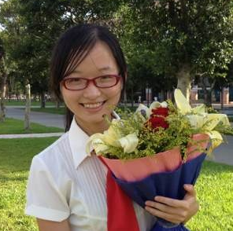

刘婉真
Tel:15920418559
E-mail:liuwanzh@qq.com
QQ:332120683

基本信息
年龄:23 英语水平:CET-6 政治面貌:党员 身高:160cm
教育背景
- 2009至2013 中山大学网络工程 本科
- 2013年9月至今 中山大学计算机技术 研究生
- 2011年10月至今 广东省信息安全重点实验室
项目经历
- 2010年10月至今 参与软件系统安全保护项目
- 参与源代码混淆系统的设计,目前主要对函数名和 API 名进行混淆。屏蔽源代码中的关键函数以及系统调用,采用一个统一的 dispatcher 函数进行替代。
- 参与目标代码混淆系统的设计,利用异常处理机制,将跳转指令修改为普通 mov,add等指令,并令其触发异常,把程序真正要执行的操作放在异常处理函数中。
- 负责项目所有文档(可行性分析、开题、月报、技术路线文档)的编写。
- 2013年9月至今 参与linux下可信操作系统设计项目
- 负责 TNC(可信网络连接)模块,构建可信的网络接入控制系统,着眼于传输数据的“不可伪造性”.
- 一方面从完整性度量层、验证层、网络访问层搭建 TNC 环境;另一方面在可信平台模块 TPM 之上,建立从 BIOS 到操作系统、应用程序的可信链,从而保障用于网络接入验证的数据的不可伪造性。
- 2011年10至2012年10月 参与 linux下基于 ukey 和 pam 机制的网络身份认证项目
- 本项目为广东省信息安全重点实验室可信操作系统设计项目的一部分。
- 协议设计中提出用户，系统，UKEY“三权分立”思想，以抵御重放和假冒等攻击，实现采用PKCS 11标准接口，对裸UKEY进行改造，作出类似U盾功能的具有通用接口的认证盾牌。
社会实践
- 2012年6月至2012年9月 腾讯产品策划实习生
- 参与 QQ 同步助手策划,参与新版本(双向同步逻辑)设计。分析各渠道用户反馈，负责输出用户数据分析报告。
- 负责 QQ 同步助手官网改版项目,进行框架设计,跟进设计、开发。(离职前官网正式已上线)
- 2012年3月至2012年6月 学院 2013 届毕业晚会筹划
- 作为助理辅导员负责筹划学院毕业生毕业晚会。
- 作为作曲、编曲创作原创歌曲《昨天》,并作为导演组织全班完成 MV 拍摄。
- 2010年10月至2011年10月 中山大学信息科学与技术学院学生会副主席
- 作为总负责策划举办学院第三届“精英计划”技能培训,组织涉及演讲技能、时间管理、礼仪、办公应用四场讲座。
- 取得统一企业、好丽友、南方报业等企业的赞助,共筹措物资折合约 4000 元。
- 2009年11月至2011年11月 《中大青年》报社编辑
- 参与《中大青年》报制作,策划“博弈—官与民”菁英论坛,番禺垃圾焚烧厂风波获广泛关注。
- 2011年8月 加入中山大学蒲公英支教队
- 赴梅州市大埔县参加为期 15 天的支教活动,担任班主任兼音乐老师,与那些可爱的孩子们至今仍有书信联系。
校内奖励
- 技术类
- 2011年5月 中山大学ACM程序设计竞赛三等奖
- 2012年5月 全国信息安全大赛中山大学选拔赛三等奖
- 2011至2012年度 Google女性工程师奖学金
- 奖学金
- 2009至2010，2010至2011n年 中山大学奖学金二等奖
- 2009至2010年度 国家励志奖学金
- 2010至2011年度 三星奖学金
- 学生工作类
- 2010至2011年度 中山大学优秀学生干部
- 2009至2010年度 中山大学信息学院优秀团干
- 文体类
- 2010年5月 中山大学信息学院书法比赛二等奖
- 2010年5月 中山大学多媒体大赛二等奖
- 2011年5月 中山大学DV大赛一等奖
- 2011年11月 中山大学信息学院羽毛球赛混双一等奖